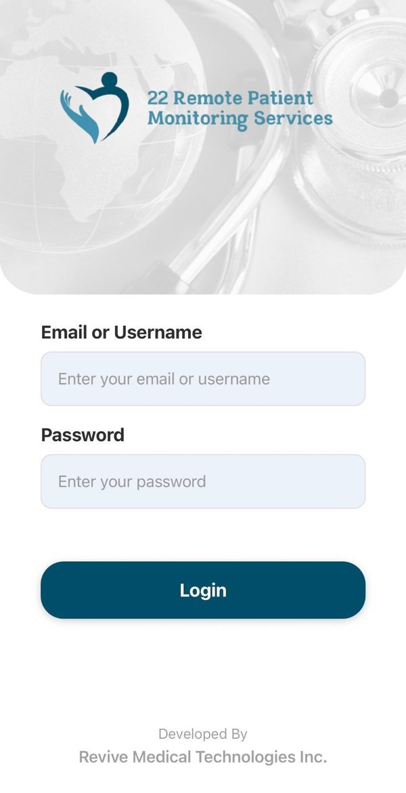
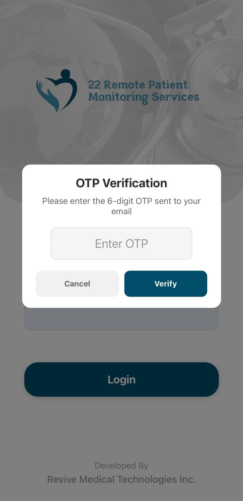
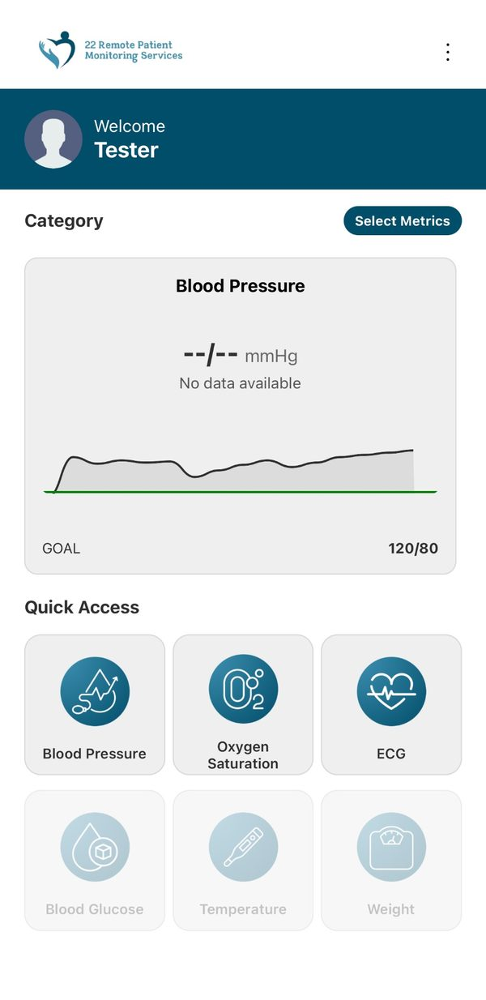
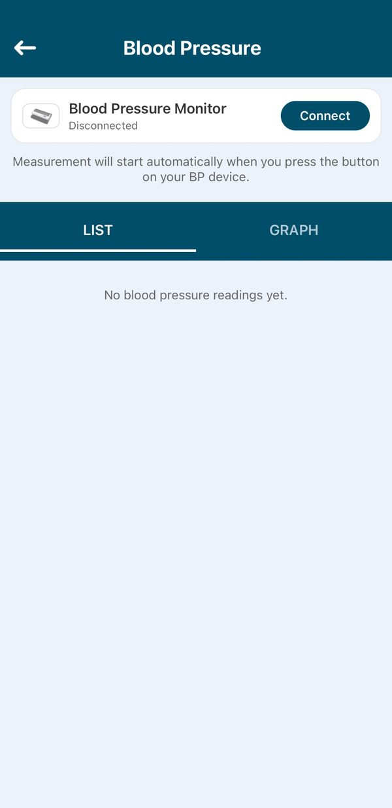
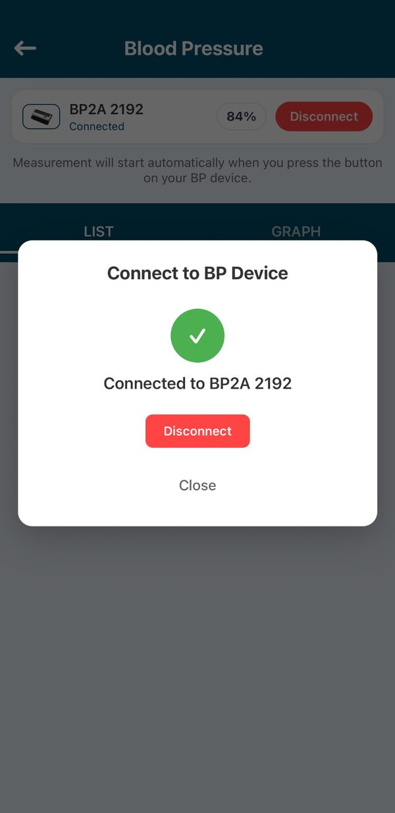
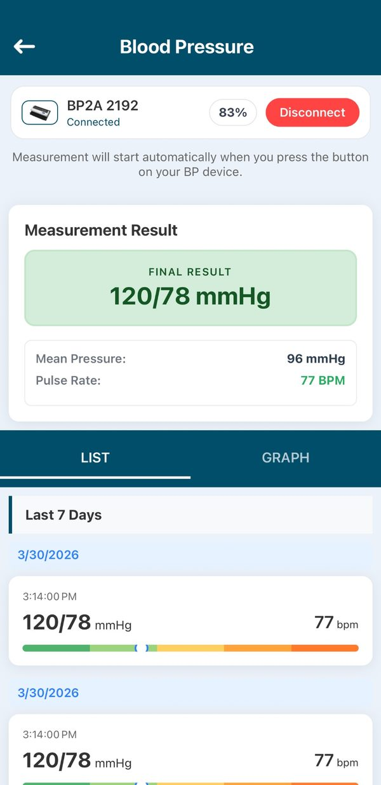

Download the 22RPM App
Free to download on iPhone and Android
The 22RPM app connects your blood pressure monitor to your care team. You only need to download it once.
- Pick up your phone and find the App Store (iPhone) or Google Play Store (Android).
- Tap the search bar and type: 22RPM
- Tap Get (iPhone) or Install (Android) and wait for it to finish.
- Once downloaded, tap Open to launch the app.
Need help? Ask a family member, or email us at info@twentytwohealth.com and we will help you.
Log In to the App
Use the username and password your care team gave you
- Open the 22RPM app. You will see the login screen.
- Type in the username and password your care team gave you.
- Tap the big Login button.
- The app will ask for a 6-digit code. Check your email for a new message with the code, type it in, and tap Verify.


Face ID / fingerprint: after your first login you can set up Face ID, so you never have to type your password again.
Find Blood Pressure on the Home Screen
One tap to get to your BP section
- Once logged in, you will see your home screen.
- Look at the bottom, under “Quick Access.”
- Tap the Blood Pressure button — it has a heart icon.

Turn On Your Monitor and Connect
Make sure Bluetooth is on — this only takes a moment
- Make sure Bluetooth is turned on on your phone. Go to Settings → Bluetooth, and check the switch is green.
- Press and hold the power button on your monitor until it turns on.
- In the app, tap the Connect button at the top of the Blood Pressure screen.
- The app will connect automatically in a few seconds.


When you see “Connected to BP2A” with a green checkmark, tap Close and you are ready.
Keep your phone close by — within arm's reach during the reading.
Put On the Arm Cuff
Correct placement gives you an accurate reading
Before putting on the cuff, sit quietly for 5 minutes. Do not drink coffee, smoke, or exercise for 30 minutes before your reading.
During your reading: sit still, breathe normally, and do not talk.
Take Your Reading and Check the Result
Your reading goes straight to your care team
- Press the Start button on your monitor. The cuff will inflate on its own — this is normal.
- Sit still and breathe normally until the cuff deflates, about 30–60 seconds.
- Your reading appears in the app automatically — blood pressure numbers and pulse rate.
- Your care team receives your reading automatically. You can close the app.

That's it. Your reading is done and your care team has received it. You can close the app.
When to take readings: once in the morning before your medications, and once in the evening. Follow your doctor's schedule.
What Do Your Numbers Mean?
Your care team watches these — but here is a simple guide
Blood pressure is two numbers, like 120/78. The top number is systolic (when the heart beats). The bottom number is diastolic (between beats).
| Category | Top number | Bottom number | What it means |
|---|---|---|---|
| Low | Below 90 | or below 60 | This reading is lower than usual. For some people that is normal and causes no problems. Tell your care team if you feel dizzy, lightheaded, faint, weak, sick to your stomach or confused, or if your vision blurs or your heart pounds or flutters. |
| Normal | Below 120 | and below 80 | Great — keep it up. |
| Elevated | 120–129 | and below 80 | A little high — your team will monitor it. |
| High Stage 1 | 130–139 | or 80–89 | Your team may contact you. |
| High Stage 2 | 140 or higher | or 90 or higher | Contact your team soon. |
| Crisis ⚠️ | Over 180 | or over 120 | Call 911 right away. |
Category boundaries follow the American Heart Association.
Call 911 immediately if your reading is over 180/120 and you have symptoms: severe headache, chest pain, trouble breathing, or changes in your vision.
I forgot my username or password. What do I do?
Email your 22RPM care coordinator at info@twentytwohealth.com and they will reset it for you quickly.
My device won't connect. What should I do?
Turn Bluetooth off and back on. Turn the monitor off and on. Open the app, go to Blood Pressure, and tap Connect. If it still will not connect, email us.
Do I need Wi-Fi for my readings to send?
Yes — your phone needs Wi-Fi or cell service. If you take a reading without internet, it is stored and sends automatically once you reconnect.
My reading seems very high or low. Should I worry?
Wait 2–3 minutes and take it again. If it is still over 180/120 and you feel unwell, call 911. Otherwise your care team monitors it and will contact you.
How do I know my reading was sent?
As soon as it appears in the app, it has been sent. There are no extra steps — your care team sees it right away.
What if I miss a day?
That's okay — just take your reading the next day. Try to take readings at the same times each day for the best results.
We are always here to help you.
If you have any trouble — big or small — please email us. We are happy to walk you through any step.
✉️ Email supportEmail: info@twentytwohealth.com